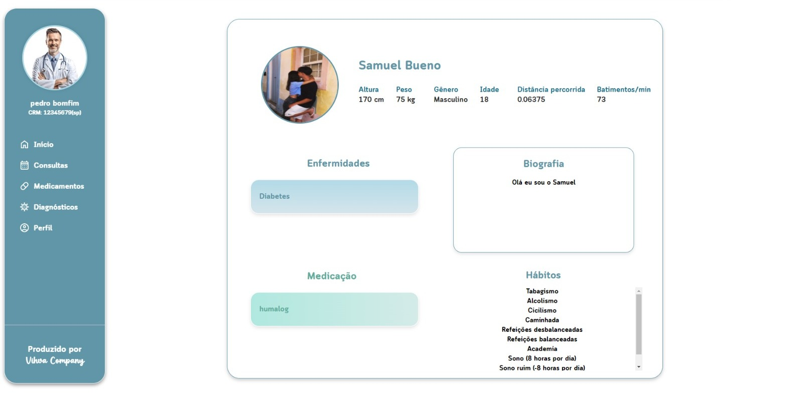
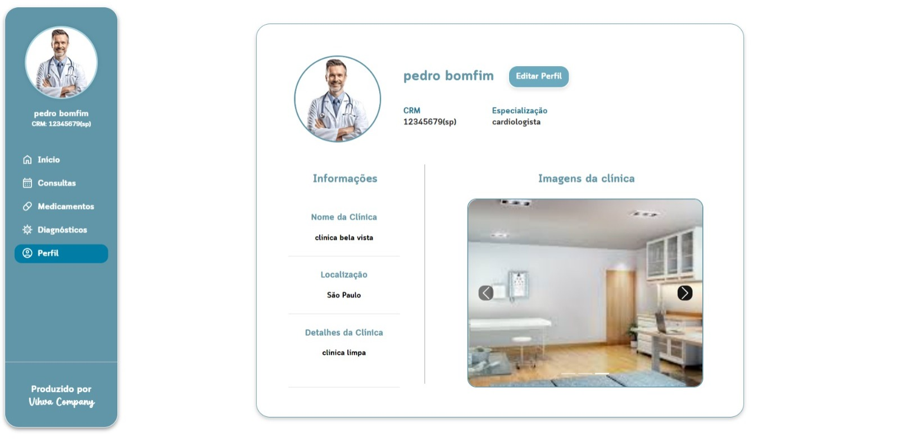

Conexão
Integração com o app Vihva:
Ofereça um controle eficiente e ágil das informações,
medicamentos e tratamentos dos seus pacientes,
de maneira intuitiva e simplificada.
Além disso, proporcione ao paciente acesso seguro
e transparente aos seus dados e à sua clínica,
fortalecendo a confiança e estreitando a relação de cuidado.